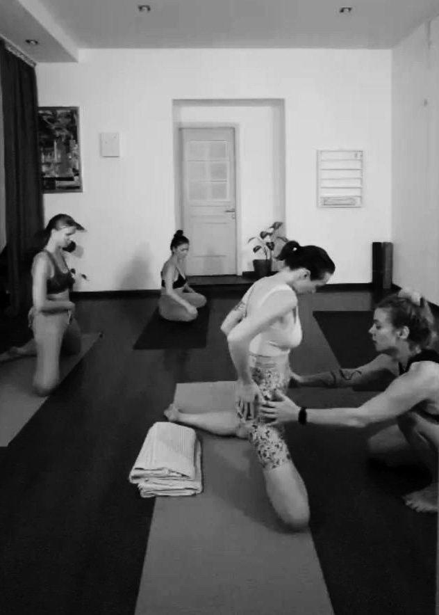
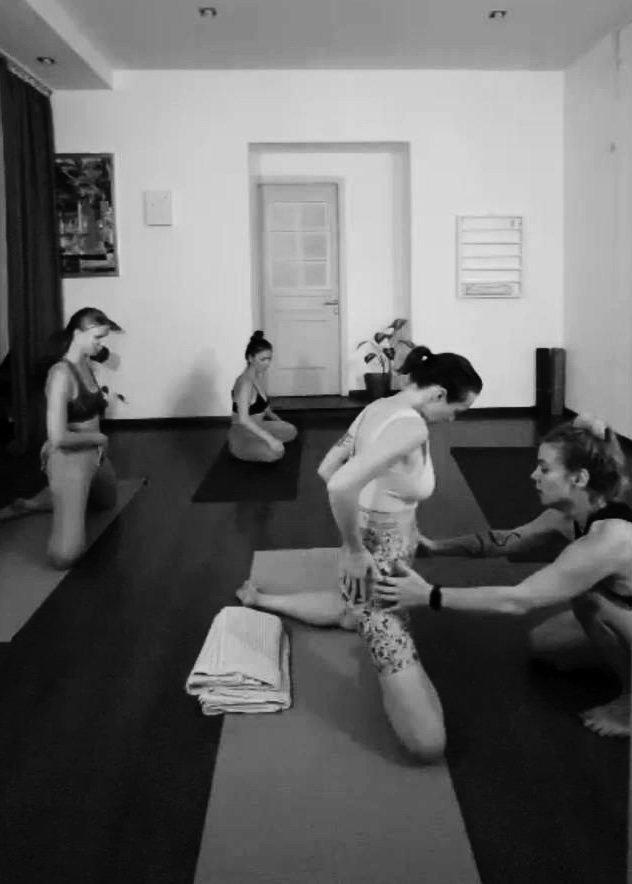

Resonare (от лат. resonare — звучать в ответ, откликаться, резонировать) — это психологический проект, созданный мной, Анной Павленко, для тех, кто хочет глубже и тоньше понимать себя и свою жизнь. В нашем мире много шума — внутреннего и внешнего, много неопределённости, тревог и сомнений. В такой ситуации важно не потерять своё звучание, найти внутренний отклик на то, что происходит с вами и вокруг вас.
Для кого этот проект?
- Вы чувствуете внутреннюю пустоту, потерю направления и ориентиров
- Вам сложно выстраивать личные границы и отношения с другими людьми
- Вы переживаете кризис идентичности и хотите лучше понять, кто вы и чего хотите
- Вас беспокоят проблемы принятия себя, своего тела или внешности
- Вы сталкиваетесь с тревогой, страхами, чувством подвешенности, эмоциональной нестабильностью
- Хотите разобраться в отношениях с близкими или с собой, научиться осознавать и принимать эмоции
- Вас волнует влияние прошлого опыта, травм и негативных убеждений на вашу текущую жизнь
Какие задачи мы можем решить?
- Найти внутренние опоры и точки баланса в состоянии неопределённости
- Снизить тревогу, улучшить эмоциональное состояние и вернуть чувство уверенности
- Осознать свои реальные потребности и выстроить здоровые личные и межличностные границы
- Наладить отношения с собой, принять своё тело и внешность
- Понять причины расстройств пищевого поведения, тревожности, проблем социализации
- Сформировать осознанный подход к жизненным изменениям, кризисам и решениям
Моя философия и подход
Мой подход мультимодален и основан на бережном сочетании различных методов психотерапии и нейробиологических принципов работы мозга и тела. Однако же основой моей практики является экзистенциальный подход — направление, помогающее увидеть себя, свою жизнь и выборы более осознанно. В первую очередь я адепт британской школы (Роберг Лэйнг, Эрнесто Спинелли, Эмми Ван Дорцен) и экзистенциально-феноменологической – Эдмунд Гуссерль, Мартин Хайдеггер. Но также активно практикую экзистенциальный анализ Альфрида Лэнгле, Dasein анализ (Людвиг Бинсвангер, Мерард Босс), американский и гуманистический подходы (Джеймс Бьюдженталь, Ролло Мэй, Ирвин Ялом, Карл Роджерс) и логотерапию Виктора Франкла.
Я не стремлюсь директивно направлять вас к конкретным ответам, а создаю пространство для глубокого самоисследования. Терапия для меня — это не лечение, а тонкая и бережная настройка внутренних процессов, помогающая вам услышать себя.
В своей работе я объединяю:
- Экзистенциальный подход — глубокий диалог о жизни, смерти, свободе, ответственности, личных значениях.
- Телесную терапию — для восстановления связи с телом, снятия напряжения и стресса.
- Арт-терапию — творчество как инструмент понимания эмоций и переживаний, которые сложно выразить словами.
- EMDR и музыкальные техники (билатеральное воздействие) — научно обоснованные методы работы с тревогой, страхами, стрессом и травматическим опытом, помогающие мягко стабилизировать психику.
- Нейропсихологические и нейробиологические основы — понимание того, как наш мозг и тело реагируют на эмоции, звуки, образы и движения, позволяет подходить к решению ваших задач глубже и эффективнее.
 



RESONARE — это не просто красивое слово. Это метафора того, как мы можем заново услышать себя, отозваться на то, что нас трогает или волнует, звучать глубже и искреннее. Это не просто терапия — это процесс переосмысления, пересборки себя, возврата к своей истинной внутренней гармонии.